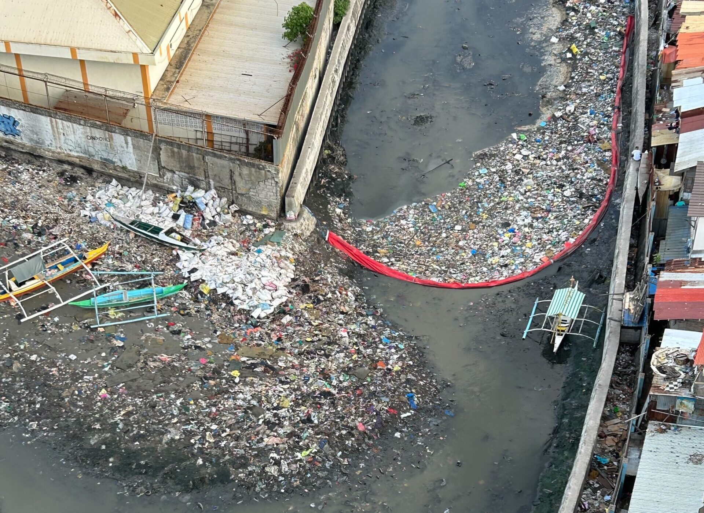
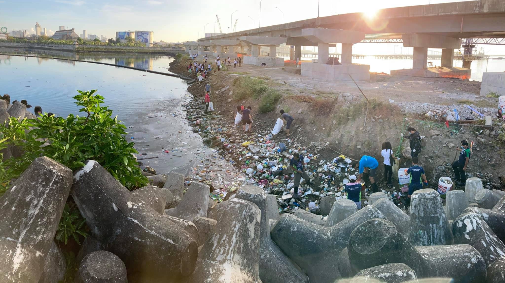

Cebu is known as one of the most progressive cities in the Philippines. It is a center for tourism, business, and culture. However, with rapid development comes a growing environmental problem — pollution.
Waste materials, plastic trash, and improper disposal have polluted many waterways and coastal areas in Cebu. This affects marine ecosystems, local communities, and the overall beauty of the environment.
Pollution creates serious problems for Cebu's environment and communities. Marine animals can die from ingesting plastic waste, while polluted water can harm fishermen and residents who depend on the sea for food and livelihood.
Environmental pollution also affects public health, tourism, and the beauty of natural ecosystems that Cebu is famous for.
Marine waste comes from plastic pollution
Of plastic items enter oceans yearly
Of marine animals affected annually

